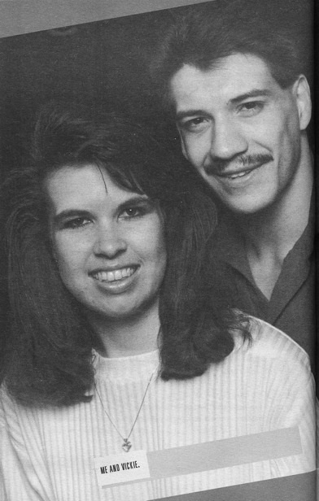

Глава 5
Перевод Александра Суменко для VSplanet.net
По окончании средней школы мне предстояло выбрать колледж. Я выбрал небольшой университет New Mexico Highlands, расположенный в Лас-Вегасе, штат Нью-Мексико. Честно говоря, все было решено за меня — только они предложили мне спортивную стипендию.
Обучение в колледже никогда меня не привлекало. Я пошел туда только потому, что родители хотели, чтобы я получил степень, на случай если моя мечта стать рестлером не осуществится.
Я попал в сборную колледжа по борьбе в первый же семестр обучения и выступал в категории до 65 кг. К несчастью, в самом начале года случился рецидив травмы моей лодыжки. Тренеру пришлось перевести меня в резерв. Спортсмен в колледже может принимать участие в соревнованиях под эгидой NCAA 4 года. Если в течение одного из четырех лет вы не можете выступать из-за травмы, вас переводят в резерв и этот год не идет в счет. Вы можете тренироваться, но не бороться на соревнованиях.
Не имея возможности бороться, я решил вернуться домой. Я решил поступить в колледж El Paso Community College, закончить в нем учебный год, а потом вернуться в Нью-Мексико. Но, когда я попал в колледж Эль-Пасо, они решили закрыть команду по борьбе. Мне поступали звонки от других колледжей, но тогда я уже решил, что не буду продолжать любительскую карьеру. Я понял, что хочу начать карьеру рестлера.
Я долго говорил об этом с отцом. Я объяснил, что серьезно настроен стать рестлером и буду благодарен, если он согласится меня тренировать. Он воспринял это великолепно. Он понял, что я говорю искренне, и согласился поработать со мной.
В первую очередь мы отправились в Калифорнию, чтобы забрать его старый ринг. Когда он проводил рестлинг-шоу, у него было 3 ринга. Один из них он продал, а два других взял с собой, когда мы поехали на запад работать на Майка ЛеБелла. Когда мы возвращались домой, он оставил ринги там: один отдал Мандо, а другой оставил на хранение моему дяде Полу.
Мы с папой вылетели туда и арендовали грузовик компании U-Haul. Я загрузил ринг в фургон, и мы отправились домой. Та поездка с отцом была одним из лучших впечатлений в моей жизни. Я сидел за рулем, а он рассказывал мне истории из своей карьеры рестлера. Я чувствовал себя ребенком, попавшим в сказочное королевство, и впитывал в себя каждое слово. Все истории касались рестлинга: матчей, других рестлеров, невероятных вещей, случавшихся с ним в дороге. Слушая эти истории, я еще больше захотел стать рестлером.
Двигатель сгорел на полпути через Нью-Мексико. Отец не был удивлен:
— Ты проверял масло?
— Ну, да, пап, — соврал я. Нам пришлось арендовать другой грузовик, а он смотрел, как я вытаскивал ринг из одного фургона и затаскивал в другой.
Всего мы провели в дороге около 20 часов. Во многом, это был первый урок, преподанный мне отцом. Двадцать часов за рулем стали неплохим примером того, сколько я буду колесить по дорогам в качестве рестлера.
Я многому научился за годы наблюдений за отцом и братьями. Но только когда я решил, что действительно хочу стать рестлером, начались настоящие тренировки.
Папа был хорошим учителем, но в первую очередь он был моим отцом. Со мной он не был таким жестким, как с остальными рестлерами. Иногда он был недоволен моим прогрессом, но вместо строгого подхода и наказаний, он просто показывал, чего от меня хочет. Его переполняла любовь ко мне.
Кроме того, мы всегда хорошо ладили. Иногда я бунтовал против него, просто чтобы понять, где находится черта, за которую нельзя переходить.
Однажды я вызвал его на бой. Я был молод и резок и смог сбить его с ног. Я думал, что невероятно крут, хотя я всего лишь поборол 60-летнего человека. Но отец тут же схватил меня под руку, перекатил и чуть не разорвал на части. Я лежал на спине и кричал: «Прости, папа! Прости!»
Он отпустил, а когда я поднялся, задал мне звонкую пощечину.
— Мне стыдно за тебя, — сказал он.
— Почему? — всхлипывал я.
— За твое поведение. И за то, что ты сдался, как девчонка.
Это было больно. И я не имею в виду то, как он меня «растянул», хотя это было просто невыносимо. Самый больной удар был нанесен по моему эго. Я был мальчишкой, который хотел стать мужчиной, а мой собственный отец выдал мне пощечину.
Когда я решил стать рестлером, отец был слишком стар, чтобы выходить в ринг со мной. Он пытался, но у него не получалось учить меня, потому что он боролся в старом стиле. Папа предложил мне найти кого-нибудь, с кем я смогу работать и тренировать приемы. Я позвонил своему хорошему другу Эктору Ринкону и спросил, не хочет ли он заниматься рестлингом со мной.
Отец стоял за рингом и говорил нам, что делать. Он заходил в ринг и рассказывал, как должно двигаться тело, потому что сам уже физически не мог выполнять приемы.
Вскоре Тури стал наведываться к нам; он тоже бросил колледж, отыграв один год в американский футбол. Там у него не получилось, и он стал обдумывать возможность карьеры рестлера.
Тури и Эктор были очень хорошими рестлерами. Я искренне считаю, что оба могли бы пробиться в WWE, но они решили пойти по другой дороге.
Я же никогда не представлял себе другой жизни. Рестлинг для меня не был выбором, это была судьба.
